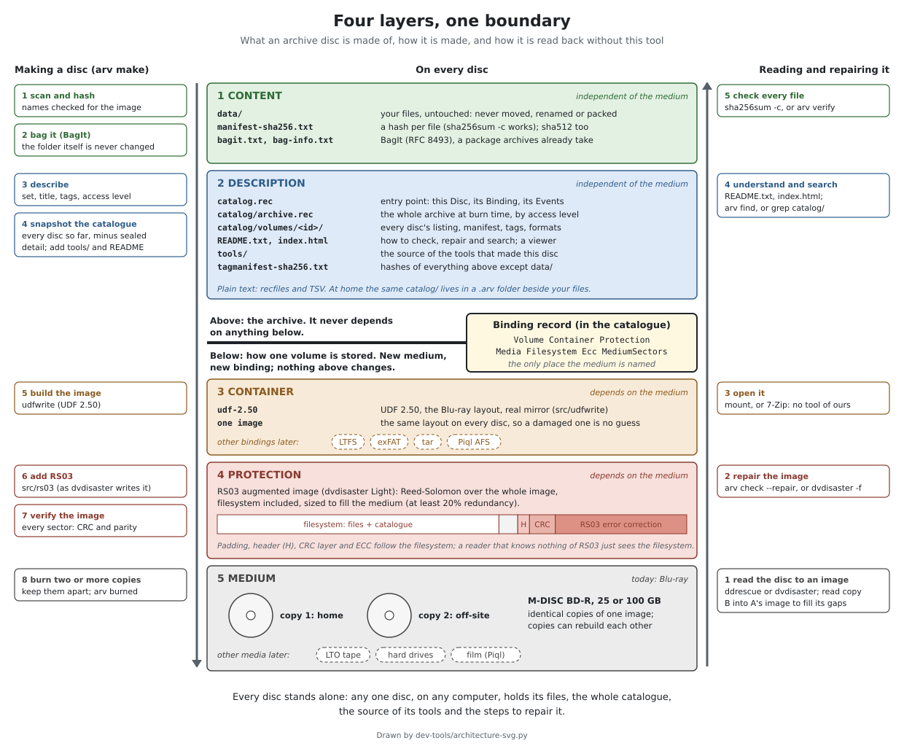
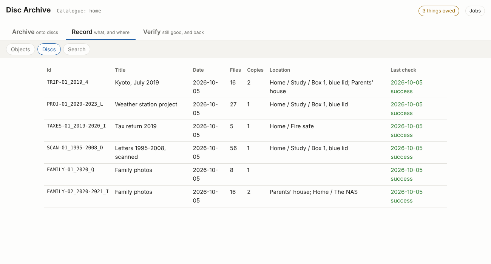
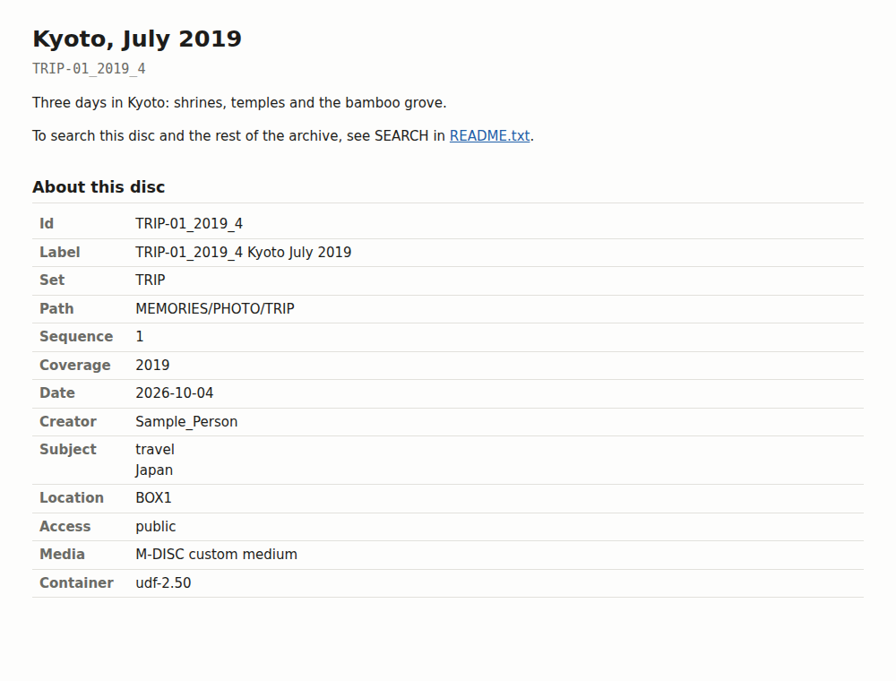

Archive, Record, Verify: long-term archiving, not backup. A personal archivist's tool: it keeps what you choose to keep, its history and every copy's whereabouts, and writes discs that explain themselves and can be read, checked and repaired decades from now without it.
Experimental. No disc made with it has yet been read back after years on a shelf, and the disc format is a draft that may still change. Treat anything you make with it as an extra copy while you try it.
Written largely by an AI coding assistant, with a human choosing the direction and reviewing the results. It has tests, but expect bugs. That's why we'd like your feedback.
What it does
Backups and archives are different jobs. A backup holds everything as it is now, so you can get back what you lost last week, and the next backup replaces it. An archive holds what is worth keeping, chosen, and must outlive the software and the person who made it. It is kept cold where possible: on offline, write-once media on a shelf, where no mistake, failure or ransomware on a connected computer can reach it. Keep your backups; arv is for the archive on top of them.
Its name is what it does. Archive: choose what goes on discs, from a folder you keep sorting or composed by hand from anywhere. Record: what exists and where: every copy, its place and temperature, and what is on which disc. Verify: that every copy still reads, what is owed, and getting things back. The commands and the interface are grouped the same way.
- It keeps the archive's record, not just discs. A folder you keep sorting becomes a collection with a history, like git's for any files; each set of discs from it is an edition. Point it at any folder and it tells you what is already on which disc, and what is on none. It knows where every copy is kept and when it was last checked.
- Your files stay plain files. No packing, compression or proprietary container: any computer can open the disc and copy them off.
- Every disc stands alone. Each one carries a hash of every file, a
catalogue of the whole archive so far, the source of the tools that made it, and a
README.txtwith the steps to check and repair it. - Damage can be repaired. dvdisaster's RS03 error correction fills the rest of each disc, the arv on every disc can repair it, and two damaged copies can rebuild each other.
- Open standards, plain text. BagIt, recfiles and TSV, and one kind of image: UDF 2.50, the Blu-ray standard. Nothing on a disc needs this tool to be read.

See it
A typical session, run for real (about a minute and a half): a disc composed from a video and a
camera card, recorded on the shelf and the NAS, then checked. The recording
is plain text; asciinema play docs/demo/arv.cast plays it in a terminal.
Try it
You need Linux, git and a C compiler. Nothing is installed and nothing is burned
in the first two steps.
1. Look around the sample archive: six small sample discs (105 MB in all) and their catalogue.
git clone https://github.com/mofosyne/arv
cd arv
make # builds arv (C, no libraries)
./arv --home samples/home list # the discs, and where they are kept
./arv --home samples/home find kyoto # which disc holds it
./arv --home samples/home gui # the same, in your web browser (needs Python 3)The disc images are release downloads (samples/fetch-discs.sh fetches and checks
them, or take one from the samples
release): open one with your file manager or 7-Zip and read its README.txt.

arv gui on the sample catalogue.
index.html every disc carries: open it in any browser, no software needed.2. Make a test image of a small folder. --no-ecc skips error correction (quicker
for a trial), and the image is named <disc-id>.noecc.iso to say so; a
separate --home keeps the trial apart from anything real.
./arv --home /tmp/arv-try make ~/some/small/folder --no-ecc --output-dir /tmp
./arv --home /tmp/arv-try list3. When you want real discs: install it (arv adds, tests and repairs the error correction itself; GNU ddrescue or dvdisaster Light reads a damaged disc into an image one day), and follow the workflow guide.
make install PREFIX=~/.local
cd /path/above/your/files && arv init --name home --default
arv make /path/to/folderTo remove it again: make uninstall PREFIX=~/.local in the same folder. That removes
the program only; your catalogues (.arv folders) and discs stay as they are.
Tell us how it went
Feedback of any size helps: a step that confused you, something that broke, a disc that would not read back, or a reason you would not trust it with your files. For questions and talk, there is a Telegram group.
Read more
- README: install and every command
- Concepts: collections, archives, copies, and how objects and folders relate
- Workflow: from a folder to discs on a shelf, and back
- Philosophy: why it works this way
- Disc format: for anyone who wants to read or write these discs with their own tools